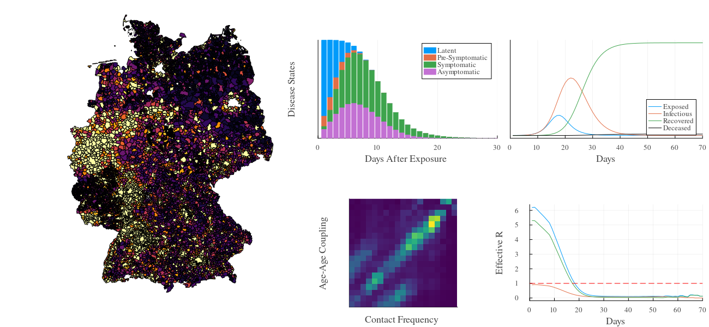

GEMS Package
Welcome
The German Epidemic Microsimulation System (GEMS) is a high-performance geo-referential agent-based infectious disease modeling framework developed in Julia. It is a research outcome of the BMBF-funded OptimAgent project. It comes with a full model of the German Population and allows to simulate the spread of infectious diseases and potential countermeasures such as isolation, testing, school- or workplace closure, contact-tracing, and many others. GEMS provides interfaces to load custom populations, adapt infection rules, or change contact patterns. It also comes with comprehensive post-processing and plotting features. All simulated data can be easily exported and used in other applications.
This documentation provides a theoretical background to the underlying model, a guide through the most important features and simulation options, a detailed description of all included functionalities, and information about the Julia package itself. Please use the table of content below or the sidebar on the left to navigate through the different sections.
Background
GEMS' core architecture and the integrated intervention modeling framework are discussed in these publications:
Ponge, J., Horstkemper, D., Hellingrath, B., Bayer, L., Bock, W. and Karch, A., 2023, December. Evaluating Parallelization Strategies for Large-Scale Individual-based Infectious Disease Simulations. In 2023 Winter Simulation Conference (WSC) (pp. 1088-1099). IEEE. https://doi.org/10.1109/WSC60868.2023.10407633
Ponge, J., Suer, J., Hellingrath, B. and Karch, A., 2024, December. A Standardized Framework for Modeling Non-Pharmaceutical Interventions in Individual-Based Infectious Disease Simulations. In 2024 Winter Simulation Conference (WSC) (pp. 1106-1117). IEEE. https://doi.org/10.1109/WSC63780.2024.10838778
Requirements
GEMS requires Julia v1.11.3+.
You will need roughly 1GB of system memory for every million agents.
Quick Installation
To import the GEMS package to your Julia environment, run:
using Pkg
Pkg.add(url = "https://github.com/IMMIDD/GEMS")Run a test simulation like this:
using GEMS
sim = Simulation()
run!(sim)
rd = ResultData(sim)
gemsplot(rd)GEMS allows to generate PDF-reports of simulation experiments. These features require Pandoc and MiKTeX (or any other distribution containing xelatex) to be installed on your machine. If you're happy using GEMS without its PDF-reporting features, installing the Julia package is all you need and you can skip this part!
If you need support with the installation, have a look at this more detailed installation guide.
License
All files that belong to the GEMS are available under GPL-3.0 license.